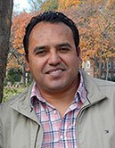

|
 |
I am a reseracher interested in multilevel statistical modeling for population health research. I am also interested in the study of maternal and child nutrition and fertility in developing countries, as well as intergenerational trasfers, and social determinants of health in aging. I am a Research Associate in the Harvard Center for Population and Development Studies. |